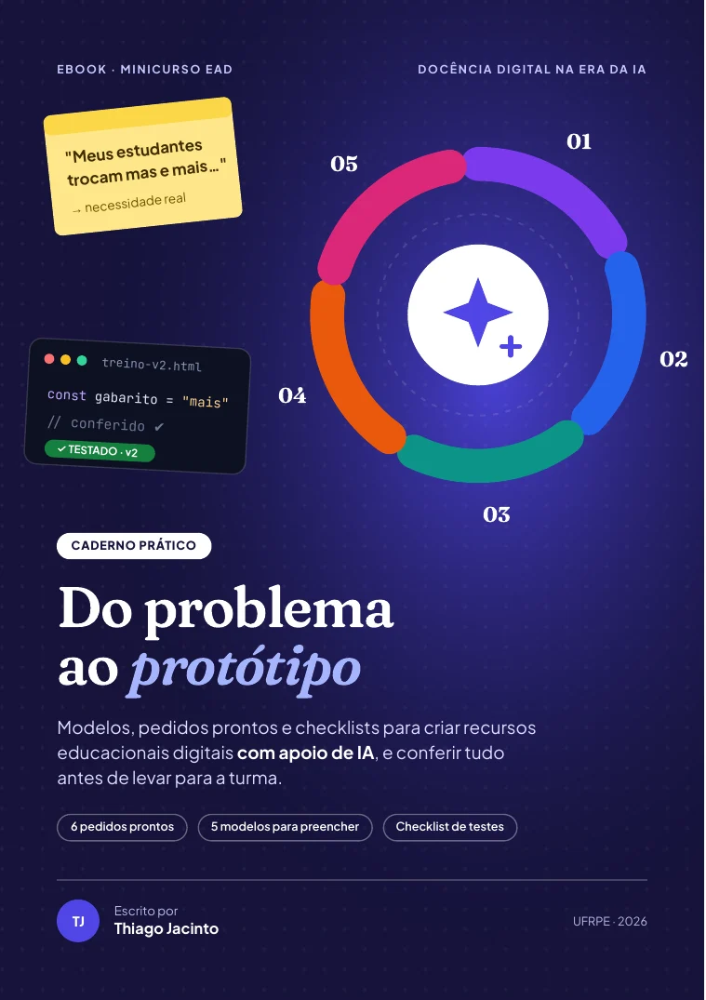

Caderno prático: do problema ao protótipo
O vídeo mostrou o método e a HQ o levou para outra disciplina. Aqui estão as ferramentas para você aplicar o ciclo na sua turma: fichas para preencher, pedidos prontos para adaptar e checklists para conferir tudo antes de publicar.

Para imprimir ou ler na telaFolheie o eBook
Use as setas ou arraste o canto da página para folhear. No ícone de tela cheia, a leitura fica mais confortável. Abrir o eBook no FlipHTML5 em nova aba
Toque em uma página para abrir o eBook completo. Os links do sumário e das páginas são clicáveis.
Um capítulo para cada etapa do ciclo
Toque em um capítulo para abrir o eBook direto na página.
Antes de pedir
Três armadilhas que o método evita e o mapa do ciclo.
Página 4Necessidade pedagógica
De vago a claro em três disciplinas e a ficha da necessidade.
Página 6Requisitos verificáveis
Desafio rápido e a tabela de requisitos para preencher.
Página 8Construção com IA
Anatomia do pedido, banco de 6 pedidos e frases coringa.
Página 10Testes
Registro de testes, conferência no console e checklist.
Página 15Melhorias e versões
Pedir como quem relata um problema e saber quando recomeçar.
Página 18Ética e acessibilidade
O semáforo da LGPD e sete checagens de acessibilidade.
Página 20Glossário, plano e referências
Termos em linguagem simples e um plano de 5 dias.
Páginas 22 a 24O que o eBook acrescenta ao vídeo
A vídeo-aula usa um caso de programação. O eBook leva o mesmo ciclo para qualquer disciplina.
Banco de 6 pedidos
Matemática, Língua Portuguesa, História, Ciências, Geografia e Inglês, cada um com um formato de recurso diferente.
5 modelos para preencher
Ficha da necessidade, tabela de requisitos, pedido, registro de testes e checklist.
Frases coringa
O que dizer à IA quando o pedido tem lacunas, o console mostra erro ou você não entende o código.
Plano de 5 dias
Um roteiro curto para criar e publicar o seu primeiro protótipo, com QR codes para a HQ e a avaliação.
Antes e depois do eBook
eBook escrito por Thiago Jacinto com apoio de ferramentas de IA generativa e revisado integralmente pelo autor. Publicado em formato interativo no FlipHTML5; o PDF tem links clicáveis e pode ser impresso.